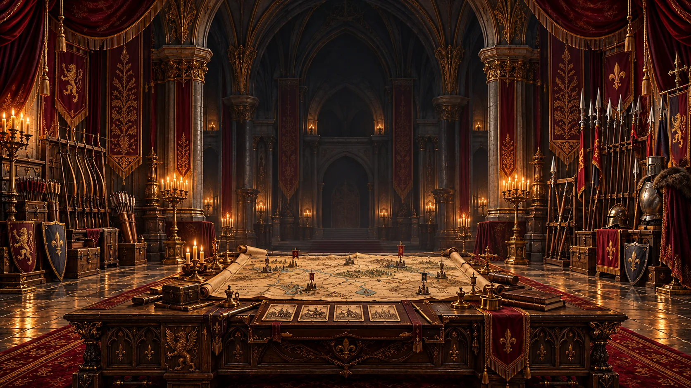

Archery. Armies. A kingdom to cross.
Take aim.
Raise your banner.
Hold the line with a well-placed arrow. Build a deck of abilities, rally your company, and lead them down the Crownroad.
Play in your browser · Single-player · In development
YOUR AIM Draw the bow. Find your arc.
✦YOUR DECK Bring the right abilities.
✦YOUR COMPANY Recruit. Rally. Advance.
Choose your road
A kingdom of possibilities.
Set out on the campaign, take a shorter charter, or sharpen your aim before the march.
The campaign
The Crownroad
From Hearthwood to the Cinderlands, fight across thirty fields. Earn new abilities, grow your army, and make your way to the Ashen Throne.
Enter the campaignA shorter expedition
Wayfarer Charter
Four battles. Branching roads. A supplied company of your own. Pick your route and break the final keep.
Take the charterMake it your battlefield
Seeded Skirmish
Choose a landscape and enemy company, then test a supplied kit. Keep the seed to fight the same field again.
Set up a skirmishFind your footing
Training Grounds
Learn shots, arcs, recruiting and companion commands with optional guided drills in the assisted playground.
Practice your aimYour campaign, Wayfarer charter and practice sessions keep their progress separate.
Before the arrows fly
A good shot.
A better plan.
You’re the archer and the commander. What you bring to the field matters as much as where you aim.
Ready your companyBuild your deck
Discover ability cards, compare their strengths, and arrange your equipped skills. Save named decks for a different approach.
Rally your allies
Recruit a company from twelve troop types, bring a companion, and choose when to hold the line or advance.
Make the shot yours
Choose pull-back, point or Auto aim. Touch controls and keyboard settings let you find your rhythm. On a phone, landscape gives you more room.
Keep your place on the road.
Crownroad checkpoints stay in this browser on this device. Open the game to choose a saved campaign or begin a new one. Export a campaign file before changing browsers or clearing your data.
Checkpoints restore battle preparation or a settled result, not an active fight. Saves do not automatically travel between website addresses.